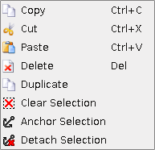

|
The selection mode allows you to copy sections of a map, and paste them elsewhere (even on other maps).
Right clicking after drawing a selection will open the following context menu on the right. NOTE: Some context menu commands may be grayed out depending on the situation. |
 |
| Anchored Selection | Detached Selection |